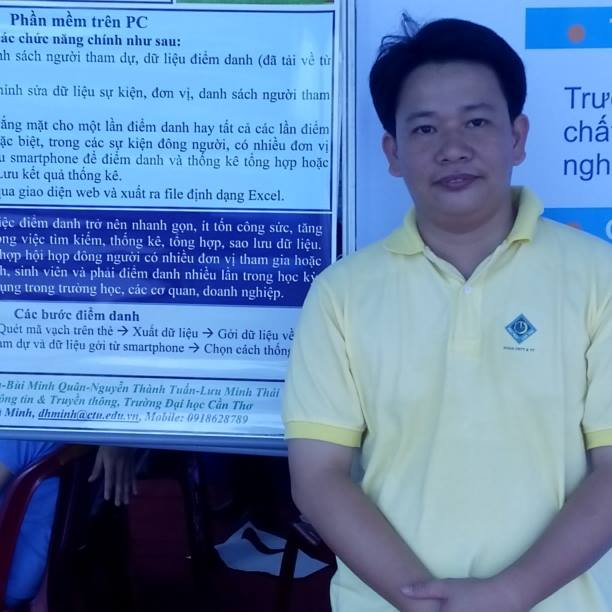

Faculty of Computer Networks and Communications
The Faculty's staff is highly qualified (including 01 Associate Professor, 06 PhDs, and 11 Masters). Most of them were graduated from developed countries with advanced education. The CNC faculty has been in charge of training two undergraduate majors in the field of information technology. Besides, the Faculty members have assisted in teaching, evaluating training programs, and guiding master/PhD students of other universities in Can Tho and provinces in the Mekong Delta.
Faculty Members
-
Senior Lecturer (Grade II) Dean ptcang@cit.ctu.edu.vn Google Scholar, Dblp , ORCID
Research direction: Big data processing, High performance computing, Knowledge system, Medical image processing Training subjects: Object-Oriented Programming, Web Security, Service-Oriented Application Development, Big Data Processing, High-Performance Computing -
Lecturer (Grade III) Vice dean nchuy@cit.ctu.edu.vn Dblp Research direction: Computer networks, Network security Training subjects: Object-Oriented Programming, Network Programming, Detecting and Analyzing Malware, Network Troubleshooting
-
Senior Lecturer (Grade I) Laboratory Head dtnghi@cit.ctu.edu.vn Google Scholar, Dblp
Research Direction: Data mining and Knowledge Discovery in Databases, Robots, IoT Training subjects: Study skills, Web Programming, Detecting and analyzing Malware, Python programming, Classifying Very Large Datasets -
Senior Lecturer (Grade II) Vice Rector of College of Information and Communication Technology nbhung@cit.ctu.edu.vn Google Scholar Research direction: Computer Networks, Network management, Cloud computing, Free and Open Source Software Training subjects: Computer Networks, Network management, Cloud Computing, Open Source Software Development
-
Senior Lecturer (Grade II) Head of ICT Labor Union phtai@cit.ctu.edu.vn Research direction: Computer networks, Network security Training subjects: Network design and installation, Network security, Firewall, Network performance evaluation
-

Lecturer (Grade III) lcnguyen@cit.ctu.edu.vn Research Gate Research direction: Network management, Free and Open Source Software Training subjects: Network management
-
Lecturer (Grade III) ntnghia@cit.ctu.edu.vn Research direction: Computer Networks, Network management Training subjects: Computer Networks, Network management
-

Lecturer (Grade III) bmquan@cit.ctu.edu.vn Research direction: Network management, Cloud computing Training subjects: Computer Networks, Network management
-
Lecturer (Grade III) hdan@cit.ctu.edu.vn Research direction: Training subjects:
-
Lecturer (Grade III) nhvlong@cit.ctu.edu.vn Research direction: Training subjects:
-
Faculty Secretary Thư ký khoa tttquyen@ctu.edu.vn Dblp, ResearchGate
Research Direction: Computer Networks, Network Security, High Performance Computing, Big data processing Training subjects: Computer Networks, Service-Oriented Application Development, Web Security, Web Programming -
MSc. PhD Candidate. Trieu Thanh Ngoan
Lecturer (Grade III) ttngoan@cit.ctu.edu.vn Dblp, ORCID, Google Scholar, ResearchGate
Research direction: High performance computing Training subjects: Object-Oriented Programming, Network Programming, J2EE Technology -
Lecturer (Grade III) tdquang@ctu.edu.vn Research direction: Training subjects: Computer Networks, Computer Architecture, Cyber Attack Techniques, Computer Forensic
-
Lecturer (Grade III) tritrang@ctu.edu.vn Google Scholar Research direction: Training subjects: Mobile devices programming, Computer architecture, Theory of cryptography, Detect and analyze Malware
-
Lecturer (Grade III) Director of Information Center and Network Administration duonglt@ctu.edu.vn ResearchGate
Research direction: Computer Networks, Network management Training subjects: Computer networks -
Lecturer (Grade III) ttdien@ctu.edu.vn ResearchGate, Dblp
Research direction: Computer networks Training subjects: Computer Architecture, Network Design and Installation, Network managment, Network Performance Evaluation -
Invited Lecturer dhminh@cit.ctu.edu.vn Research direction: Training subjects: Mobile device programming, Computer architecture
-
Invited Lecturer nchngoc@ctu.edu.vn Research direction: Training subjects: Web Programming
{kind=link}